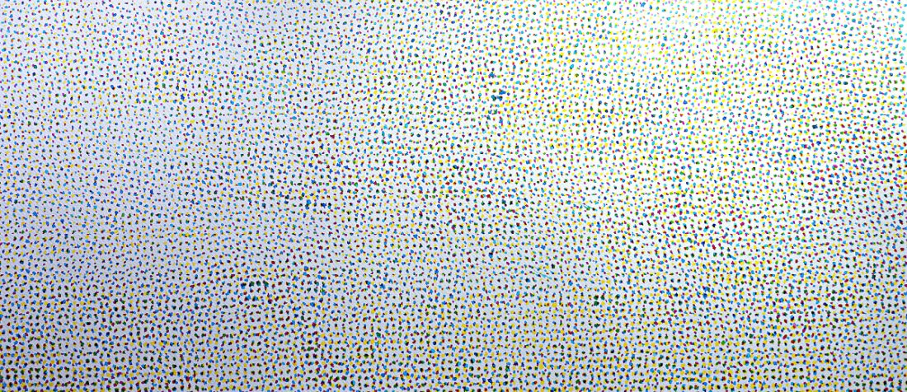
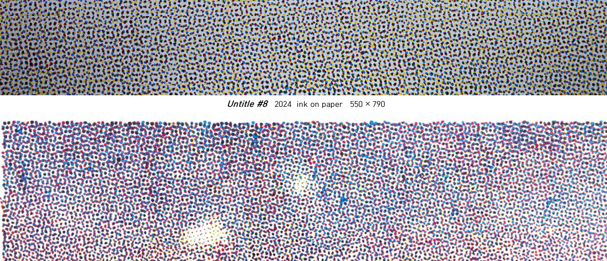
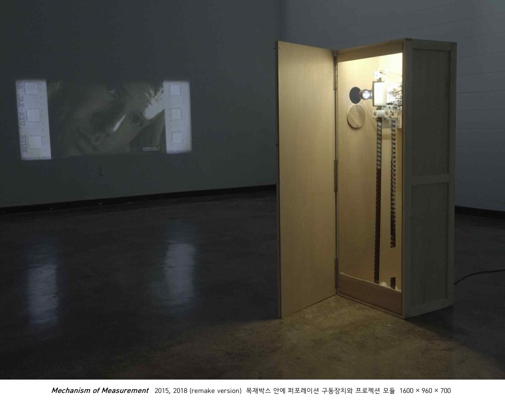
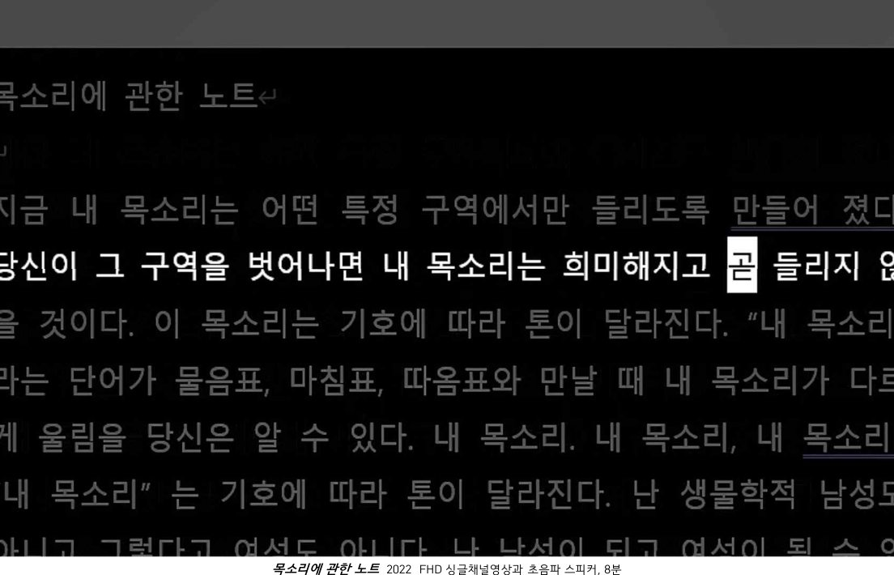
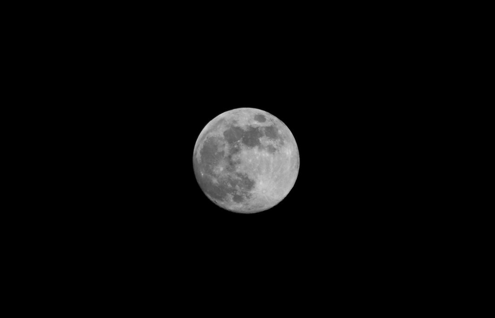
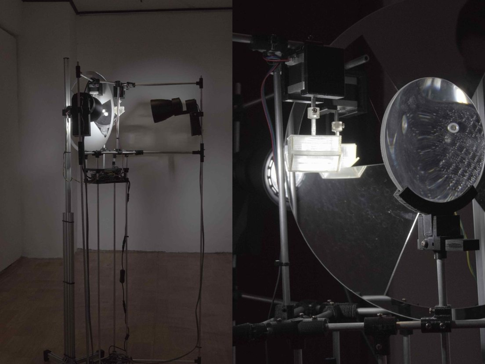
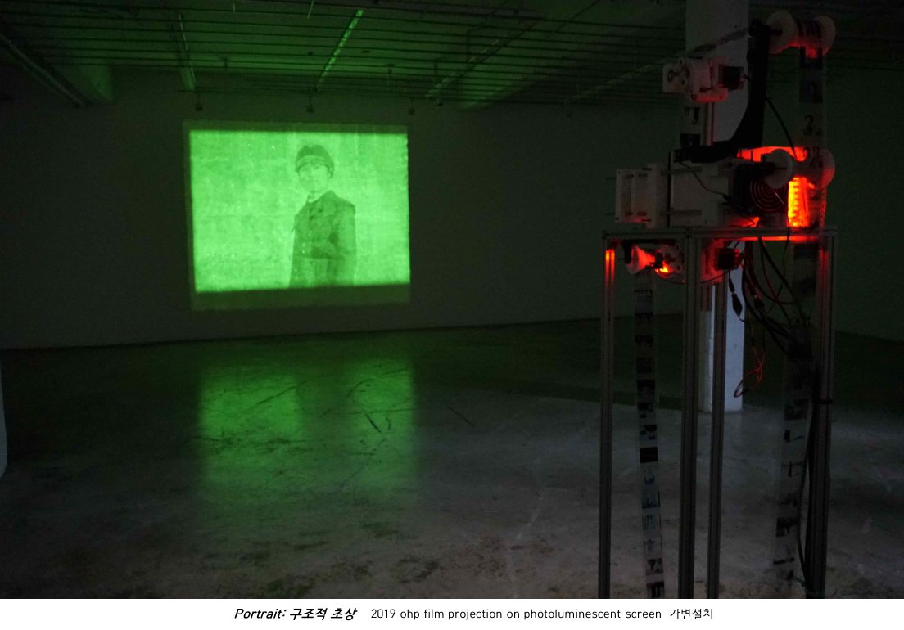
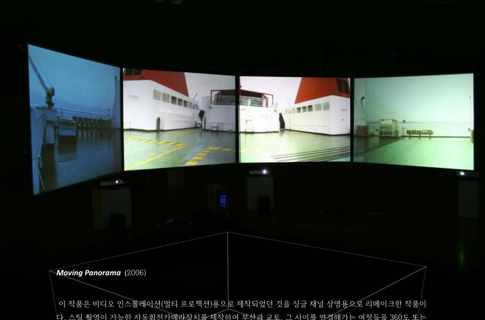

Retouching: Drawing for Erasure


세 채널의 영상이 각각 다른 LED 모니터에서 재생되는 영상 설치 작품입니다. 위 이미지는 설치 전경이 아닌 각 영상의 스틸 이미지입니다.
세 채널의 영상이 각각 다른 LED 모니터에서 재생되는 영상 설치 작품입니다. 위 이미지는 설치 전경이 아닌 각 영상의 스틸 이미지입니다.


종이에 잉크를 얹는 붓질은 마치 뜨개질과 같았다. 한 올 한 올 실을 엮어 형태를 만들어내듯, 붓놀림 하나하나가 모여 그림을 완성해갔다.
시안과 마젠타가 겹치면서 새로운 색이 생겨나고, 자유롭게 배치되었던 점들은 스스로 만들어낸 규칙 속에서 조화를 이룬다. — 포트폴리오의 개인전 서문에서 발췌·요약
회화를 사진으로 보는 것은 진정한 회화를 경험하는 것이 아니다. 마찬가지로 조각을 사진으로 보는 일은 더욱 이상한 일이다.
미술관의 기록 이미지가 지닌 선택성과 한계를 바탕으로, 오래된 매체와 새로운 매체 사이에서 현실의 기록과 관찰, 역사적 내러티브의 틈새를 다룬다. — 포트폴리오 작업노트 및 작품소개 요약
Watch on Vimeo ↗일본 규슈 치쿠고 지역의 녹나무(Cinnamomum camphora) 숲에서 수집한 재료와 필름을 활용한 설치 작업이다.
이미지의 투영과 물질적 흔적을 통해 영화적 장치와 장소의 기억을 탐구한다. — 포트폴리오 작품 설명 요약
Watch on Vimeo ↗





영화적 장치, 프레임, 매체의 지각 조건과 측정의 문제를 중심으로 작업과 이론 연구를 병행한다.
변재규(Byun Jaekyu, 1975)는 영상 설치, 영화, 사진, 회화 등의 매체를 통해 영화적 장치와 지각의 메커니즘을 탐구하는 아티스트이다. 풍경의 파노라마적 재해석에서 출발해 이미지의 기록·재생·투영을 구성하는 장치에 주목해 왔다.
최근에는 회화를 시각적 구조물을 만드는 과정으로 접근하며, 작품 제작과 병행해 관련 이론 연구 및 리서치를 수행한다.
작가 소개는 업로드된 CV의 서술을 바탕으로 홈페이지용으로 편집했습니다.
국립현대미술관 · 국립아시아문화전당 · 부산현대미술관
주요 이력 발췌. 전체 CV는 추후 별도 페이지로 확장할 수 있습니다.
이메일과 전화번호는 공개 여부 확인 전까지 표시하지 않습니다.